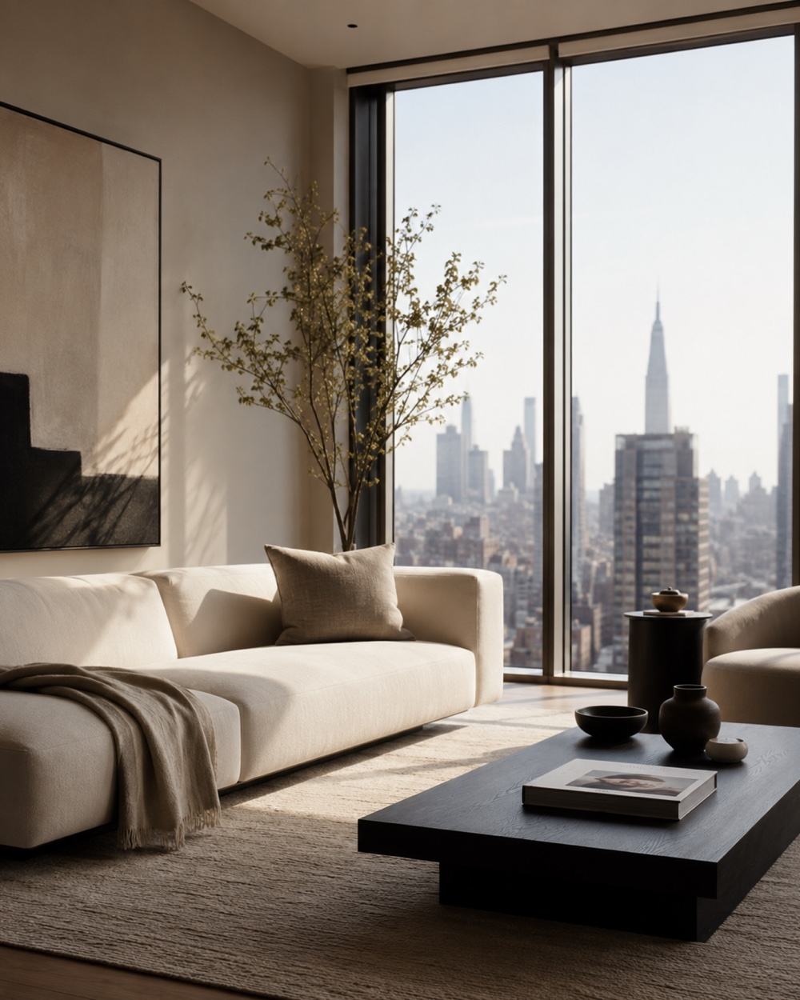
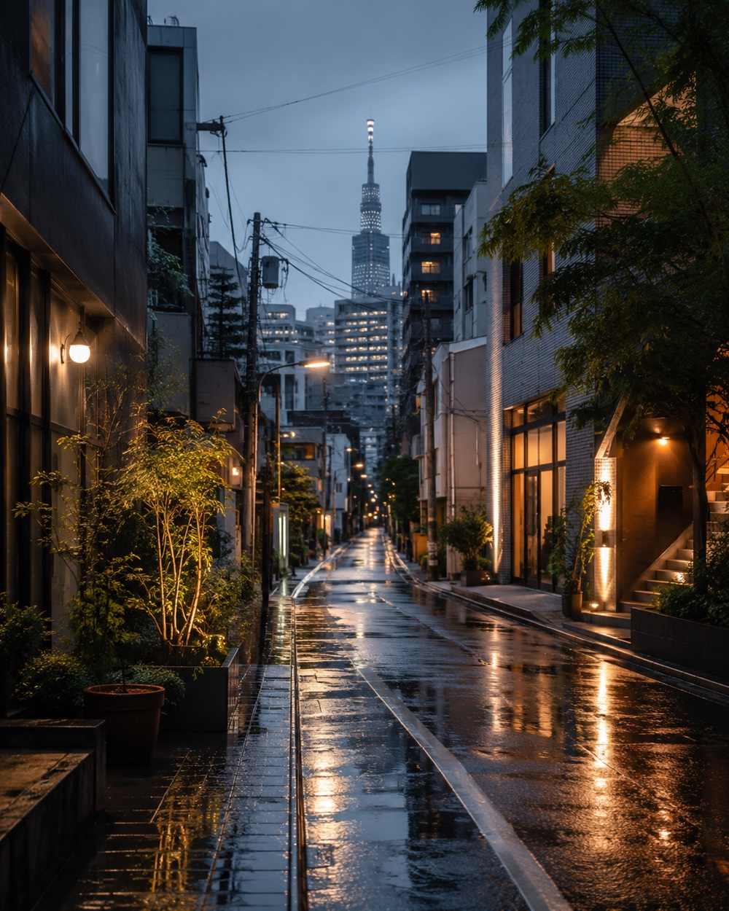

アカウント運用
アカウント設計、プロフィール作成、投稿テーマ整理、投稿スケジュール管理など、SNS運用の土台づくりをサポートします。
PR / SNS / Creative Support
企画、投稿作成、AI活用、効果測定まで。ブランドの空気感を大切にしながら、続けられる発信のかたちを整えます。
ご相談・ご依頼はこちらService
SNSでの発信やPR活動を、企画・投稿作成・AI活用・効果測定まで幅広くサポートします。
アカウントの方向性づくりから、日々の投稿準備、画像・動画素材の制作、投稿後の分析まで、目的に合わせて無理なく続けられる運用を一緒に整えます。
What I Do
アカウント設計、プロフィール作成、投稿テーマ整理、投稿スケジュール管理など、SNS運用の土台づくりをサポートします。
投稿文、画像・動画素材、コンテンツ案、ショート動画構成など、日々の発信に必要な制作をサポートします。
画像・動画生成、プロンプト作成、アイデア出し、作業の自動化・効率化など、生成AIを活用した制作・運用をサポートします。
投稿データの分析、レポート作成、反応の傾向整理、改善策の提案まで、次の発信につながる振り返りをサポートします。
Works
世界観づくり、投稿素材、動画のキービジュアルなどに展開しやすいサンプルです。

洗練された空間の空気感を、光・余白・質感で表現したインテリアビジュアル。
海外ファッション誌のような上質感と、印象に残る人物表現を意識したポートレート。
様々な場面で使いやすい、懐かしさと静かな余韻を感じるレトロなアニメ風画像。
レトロなポスター感と洗練された配色で、個性のあるキャラクター表現をデザイン。

日常の街並みに映画のような空気感を加えた、実用性の高い都会風景ビジュアル。
Menu
内容やボリュームに合わせて柔軟にご提案します。
Creative
¥15,000〜
画像・動画生成、キービジュアル案、ショート動画構成など、単発制作にも対応。
LAUNCH
¥50,000〜
SNSから依頼につながるLPを制作・公開。個人・小規模サービス向けのシンプルなLP。
Light
¥30,000〜
投稿テーマ整理、投稿文作成、簡単な画像制作など、まず発信を整えたい方向け。
Standard
¥80,000〜
企画、投稿制作、スケジュール管理、AI活用、月次の振り返りまでまとめて伴走。
Flow
目的、掲載先、現在のお悩み、希望する制作内容をお知らせください。
運用の方向性、制作範囲、スケジュール、費用感を整理します。
投稿案、素材、AI活用フロー、必要なレポート形式などを制作します。
納品後の反応を確認し、次の投稿や運用改善につながる形で整えます。
Policy
FAQ
はい。目的や届けたい相手を整理するところから一緒に進められます。
可能です。投稿用画像、ショート動画構成、AI生成素材など、単発制作にも対応します。
もちろんです。使用目的や掲載先に合わせて、使う範囲や確認方法を事前に整理します。
どちらにも対応しています。まずは単発で試してから、月次運用に広げることもできます。